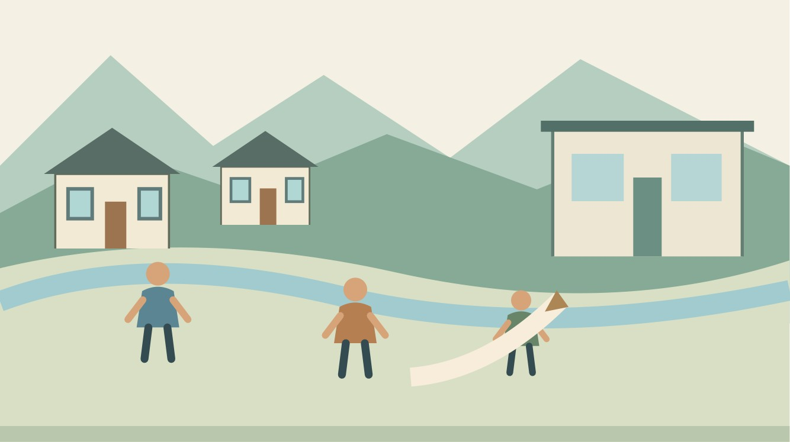
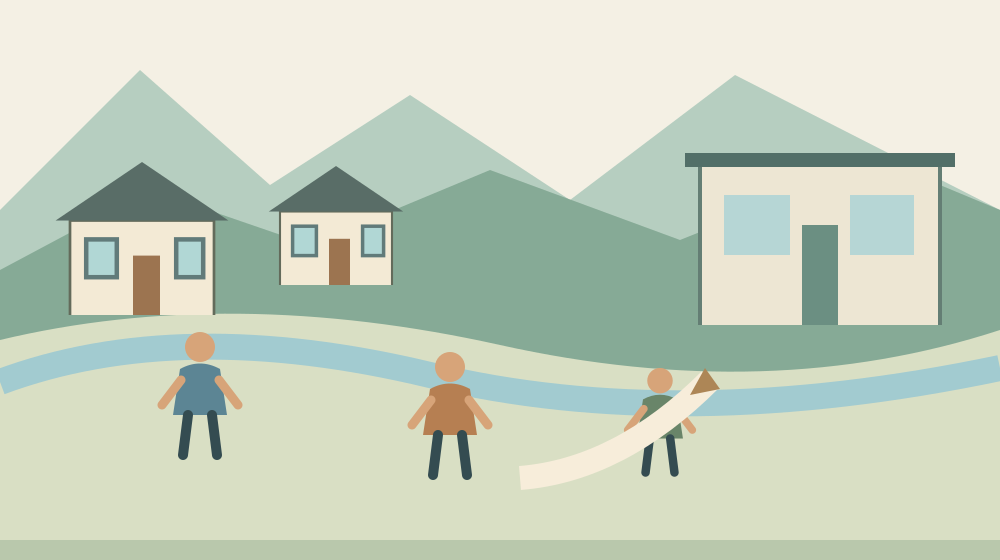

森町の人権相談｜11月12日に話せる困りごと

Q. プライバシー侵害や誹謗中傷が心配。森町ではどこで話せる？
森町の令和8年度日程表では、次の人権相談は2026年11月12日13時から15時です。会場は町民生活センター2階講義室Bで、人権擁護委員が相談を受けます。予約の要否や持参書類は本文に記載がないため、住民生活課住民係0538-85-6312へ確認してください。日時と出来事を短く整理することから始められます。
森町で暮らしを続けるために、困りごとを話せる先を持つ
森町で人との関係に悩む方は、相手との距離を簡単には変えられないことがあります。家族の用事や地域の役割を続けながら、言われたことを思い返す。その負担を、気にしすぎだと片づける記事にはしたくありません。暮らしを続けるための確認先を整理します。
私は大石浩之（磐田市／不動産業）です。森町の外に住む者として、地域の関係を外から決めつけることはできません。この記事は、個別の相手の行為を違法と断定するものではなく、町の人権相談へ何を確認し、どのように話す準備をするかを考えるものです。
私の考えは、問題の名前を自分で確定してからでなければ相談できない、という負担を減らしたいというものです。今困っていることを短く書く。日付が分からない部分は未確認のまま残す。専門家や担当者に状況を伝えるための一歩は、今日から始められます。
次の掲載日は11月12日、会場は講義室B
森町の公式ページ「暮らしの相談窓口」は、令和8年度の人権相談日程を掲載しています。2026年10月26日に本文を確認したところ、次の掲載日は11月12日木曜日です。時間は13時から15時、会場は森町町民生活センター2階講義室Bです。
同じ日程表には10月22日と12月3日も掲載されています。10月22日は今回の確認日より前で、これから利用する回ではありません。11月12日の日程を紹介する際も、ページの更新日である4月23日を、新しい制度の開始日とは扱いません。
相談を受けるのは、法務省から委嘱された人権擁護委員です。町は相談内容として、いじめ、プライバシーの侵害、誹謗中傷などの人権問題を挙げています。これらは公式案内の相談例であり、読者の出来事がどれに当たるかをこの記事で判定するものではありません。
問い合わせ先は住民生活課住民係、電話0538-85-6312です。人権相談の欄には、予約の要否、定員、持参書類の指定がありませんでした。したがって、予約不要や、当日行けば必ず相談できるという説明はしません。訪問前に確認できる事項として残します。
私なら、問い合わせの電話では「11月12日の人権相談について、利用方法を確認したい」と最初に伝えます。詳しい内容をどこまで電話で説明するかも、相手の案内を聞いて判断できます。最初の連絡で経緯を全部話さなければならないと、自分に課す必要はありません。

相談できる問題の例と、この記事が判断しないこと
町の案内は、人権相談の例をいじめやプライバシー侵害、誹謗中傷などと示しています。私は、読者がその言葉を見て自分の困りごととの関係を考えられる点に意味を感じます。ただし、案内に似た言葉があるだけで、個別の事実関係まで確定するわけではありません。
たとえば、誰かに伝えられた話と、自分が直接見聞きした話は分けて説明できます。私は、「相手がそうしたに違いない」と書くより、「この日に、この言葉を聞いた」と書く方を勧めます。推測を禁止するためではなく、確認が必要な箇所を相手に伝えやすくするためです。
気持ちの負担も、出来事とは別の欄に書いてよいと考えます。眠りにくい、外出するのがつらいなど、本人が感じていることを、無理に法律用語へ言い換える必要はありません。診断名を自分で付けるのではなく、生活で困っていることとして説明する方法です。
誰かの人格を評価する言葉が並ぶと、相談で知りたい具体的な出来事が埋もれることがあります。私は、相手の性格をまとめるより、いつ、どこで、何があったかに戻る準備を提案します。相手を許すためでも、被害を小さく扱うためでもなく、話の焦点を保つためです。
この記事では、損害賠償の見込みや、個々の表現が法律上どう扱われるかは判断しません。相談の場で適切な確認先を尋ねる事項です。答えを早く知りたいときほど、町の相談案内、個別の出来事、専門家の判断を分けて扱います。
良い点｜地域で話す入口と担当が示されている
森町の人権相談は、開催日、時間、会場、担当者の立場をまとめて案内しています。私は、何も分からないまま窓口を探す負担が小さくなる点を評価します。仕事や家族の予定を調整する人にとって、場所と時間が分かることは利用の準備につながります。
人権擁護委員が扱う相談の例があることも、私は良い点と考えます。「人権」とだけ書かれているより、プライバシーや誹謗中傷という生活に近い言葉から、自分の困りごとを考えられます。役場に何を尋ねればよいか分からない人にも、電話のきっかけをつくれます。
問い合わせ先が住民係と明記されているため、まず利用方法を確認できます。私は、いきなり解決を求めるのではなく、相談につながる入口を持てることに価値があると考えます。会場へ行く前の確認だけでも、付き添う家族の無駄な移動を減らせます。
地域の相談を支える方にも、時間と役割の範囲があります。私は、その働きを当然と思わず、利用者側も内容を整理して訪ねる形を考えたいと思います。限られた時間を、話を最初から探すためではなく、困っている点を確かめるために使える準備です。
注文したい点｜予約と持ち物の扱いを見つけやすく
森町の人権相談欄では、予約の要否と持参書類の記載を確認できませんでした。私は、利用前によく迷う条件が、日程と同じ場所にあると助かると考えます。受付方法が分かれば、電話をする時間を確保しにくい人も、次の行動を考えやすくなるためです。
相談内容によって、あらかじめ説明すべきことや持参するとよい資料は異なります。私は、一律に大量の資料を持ってくるよう求める案内を望んでいるわけではありません。どこに尋ねれば準備の範囲が分かるか、その入口が近い位置にあると使いやすくなるという希望です。
人権の問題を話すこと自体が負担な人もいると、私は考えます。付き添いの可否や、話す場所について気になることがあるなら、事前に尋ねられるとよいと思います。今回確認した町の本文には、その条件の説明がないため、利用可能と断定せず確認項目にします。
私自身、困りごとを具体的に書く提案が、読者に新たな宿題を背負わせないか迷います。だから、一枚を完成させなければ相談できないとは言いません。一行だけでも構いません。書けない部分があるなら、そのまま窓口へ相談方法を尋ねる余地を残します。
相談メモは、出来事と希望を分ける
人権相談の準備として、日時、出来事、生活への影響、希望することを分けたメモを作れます。これは私の提案で、町が指定する様式ではありません。相談内容を証明する書類が必ずそろうとは限らないため、分かることから整理する形です。
日時の欄には、確かな日付だけを書きます。思い出せない場合は「10月上旬ごろ」「正確な日は不明」など、曖昧さも残します。日付を確定させるために無理に相手へ連絡することまで、この準備では求めません。手元の情報で確認できる範囲にとどめます。
出来事の欄は、一つの場面を短く書く方法があります。直接聞いた言葉なのか、誰かから聞いた話なのかを区別します。画面に表示された文章がある場合も、それを見た日時と、自分が分かる範囲を記録する考えです。情報の扱いに迷うなら、先に窓口へ尋ねられます。
生活への影響は、具体的な行動で書くと説明しやすくなります。予定を変更した、外出をためらっているなど、本人の暮らしに起きたことです。私は、相手への評価と自分の生活の変化を分ければ、何を改善したいのかが見えやすくなると考えます。
希望の欄には、「何ができるか知りたい」「適切な相談先を知りたい」などを書けます。最初から解決方法を指定する必要はありません。相手に連絡してほしいのか、まず話を聞いてほしいのかも、本人が話せる範囲で確認する事項です。相談の結果をここで約束することはできません。
意外な点｜同じページでも相談の相手と日程は違う
森町の「暮らしの相談窓口」は、人権相談のほかに行政相談、無料法律相談、年金相談などを掲載しています。同じページにあるからといって、同じ日に同じ担当者が全部を受けるわけではありません。人権相談の会場と日程を、他の欄から読み替えないよう確認します。
行政相談は、国の行政機関への苦情や要望などを扱う案内です。人権相談は、いじめやプライバシー侵害などが例として示されています。行政相談への伝え方の記事とは、相談する内容と相手が異なることを押さえておくと、入口を選びやすくなります。
無料法律相談は、弁護士が相続、離婚、借金などの法律問題に応じる別の枠です。その欄にある予約制・先着人数を、そのまま人権相談へ当てはめることはできません。私は、似た名前の案内ほど、見出しを確認してから日付と連絡先を書き写す方法を勧めます。
窓口全体の違いは、森町の相談窓口と予約の整理記事も参考になります。今回の記事は、その中でも人権相談で何を話す準備をするかに絞っています。どの窓口に該当するか判断できないときは、住民係に困りごとの概要を伝えて確認できます。
犯罪被害の相談先も、役割を分けて考える
森町は、人権相談とは別に犯罪被害者等総合相談窓口を案内しています。設置場所は役場の総務課行政係内で、適切な情報提供などを行うための窓口です。受付は祝日・年末年始を除く月曜から金曜の8時30分から17時15分と記載されています。
同ページの問い合わせ先は総務課行政係、電話0538-85-6300です。静岡犯罪被害者支援センターへの案内もあります。これは、今回の困りごとが犯罪被害に当たると決める情報ではなく、別の支援の入口があるという事実です。
私なら、犯罪被害についての情報提供を求めたい場合と、人権相談の利用方法を知りたい場合を分けて問い合わせます。森町の犯罪被害者等総合相談の記事では、話す範囲と希望する支援を記録する考え方を扱っています。別窓口の案内を、同じ相談会として紹介しません。
身の安全に関わる急ぎの事情がある場合、私は11月12日まで待つ前提で予定を組むべきではないと考えます。町の相談会の日程は、緊急の対応を保証するものではありません。定例相談へ向けた準備と、今すぐ必要な対応は分けて、適切な機関へ確認する必要があります。
対案・結論｜今日は利用方法と一つの出来事を確認する
森町の人権相談を検討する人が今日できることは、住民係へ利用方法を確認し、話したい出来事を一つ整理することです。私は、この二つを別々の作業にする方法を勧めます。メモが完成していなくても、予約や持ち物の質問はできます。
電話をする人は、11月12日13時から15時の案内を見たと伝えます。そのうえで、予約の要否、受付の方法、持参するとよい資料、付き添いについて確認します。すべて公式本文で確認済みの条件ではないため、相手の返答をメモして予定を立てます。
会場へ行く予定が決まったら、町民生活センター2階講義室Bと書きます。森町には別の相談が開かれる保健福祉センターもあるため、施設名を省かない準備が役立ちます。これは移動を支える家族にも伝える情報です。会場を曖昧な「センター」で共有しないようにします。
相談の場では、最初に「今日は何を知りたいか」を伝える方法があります。私は、出来事の説明が長くなっても、質問に戻れるよう一文を用意する考えです。助言を受けたら、次に確認する先と、自分が行うことを分けて書き留められます。
相談の結果がすぐに出るとは限りません。私は、結論を急がず、何が確認でき、何が残ったかを記録することを勧めます。家族へ話すときも、相談担当者の説明と、自分の希望を分ける。次の相談で同じ説明を繰り返す負担を減らすための準備です。
大石の視点｜住まいの判断を急がせる前に
近所との関係に悩んでいる方へ、不動産事業者が最初から転居や売却を答えとして出すことは慎重であるべきだと、私は考えます。家を動かすには費用も時間もかかります。まず、住み続けるうえで何に困り、どこへ相談できるかを確かめる余地があります。
私が相談の準備を考えるなら、机の上に出来事のメモと生活の予定表を並べます。これは体験談ではなく、私が提案する場面です。誰が付き添えるか、どの日に電話できるかまで書けば、困りごとを一人で抱える状態から、次の行動を分けて考えられます。
森町の人のつながりを、良い面だけで語るつもりはありません。ただ、外から地域全体を悪く決めつけても、目の前の暮らしは助かりません。私は、具体的な出来事を具体的な確認先へつなぐ方を選びます。今日、話したいことを一行にする。それが相談の準備になります。
FAQ｜11月の人権相談へ行く前に
11月12日は予約せずに行ってよいですか？
森町の人権相談欄には、2026年11月12日13時から15時、町民生活センター2階講義室Bとありますが、予約の要否は記載されていません。予約不要とは断定できません。住民生活課住民係0538-85-6312へ、利用方法と受付を確認してください。持参資料や付き添いの扱いも、必要に応じて尋ねられます。
人権問題かどうか自分で判断できなくてもよいですか？
町は相談例として、いじめ、プライバシー侵害、誹謗中傷などを挙げています。自分の困りごとが対象か分からない場合は、住民係に概要を伝え、確認先を尋ねられます。この記事は個別の行為を判断しません。直接見聞きしたこと、他人から聞いたこと、自分の心配を分けておくと、状況を説明しやすくなります。
家族に付き添ってもらい、資料を一緒に見せられますか？
今回確認した人権相談欄では、同席や資料の扱いまでは確認できませんでした。予約方法を尋ねる際に、付き添いと持参物も確認してください。私は、本人が話したい範囲を先に家族で確かめる準備を勧めます。メモは町の指定書式ではなく、出来事と本人の希望を区別して伝えるための補助として使えます。
出典・確認日
2026年10月確認。開催・制度の数値は公式情報、評価と段取りの提案は執筆者の意見です。
- 森町：暮らしの相談窓口（2026年10月26日確認）
- 森町：犯罪被害者等総合相談窓口（2026年10月26日確認）
開催日時、取扱条件、制度・数値は変わる場合があります。実際の利用前に主催者・担当窓口の最新案内を確認してください。個別の判断が必要な場合は、担当窓口や関係する専門家へご相談ください。